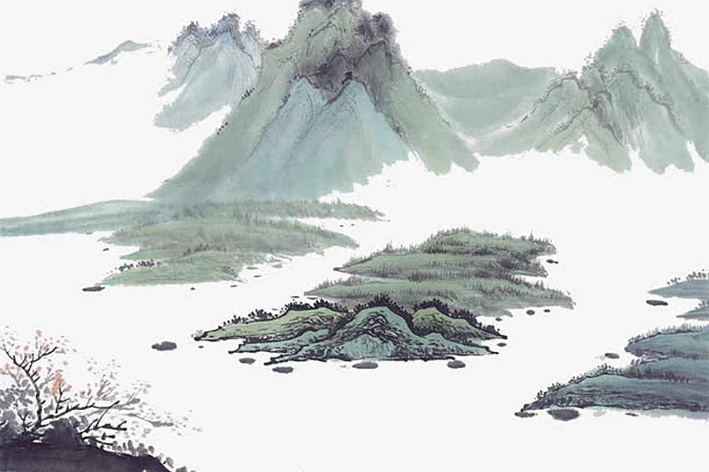
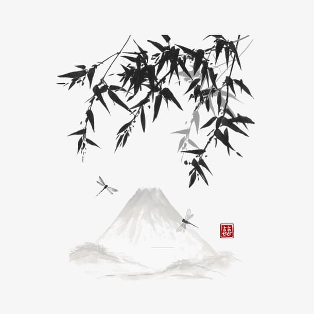
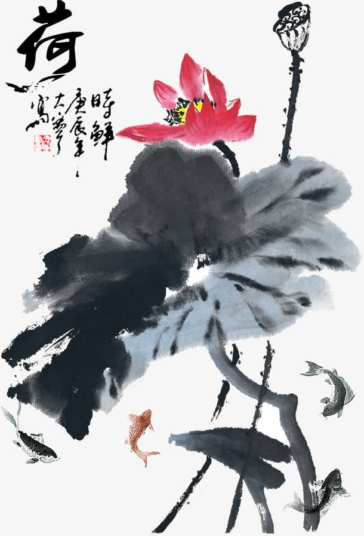

中华民族拥有五千年的悠久历史和灿烂的文化。而传统文化是我们的民族之魂，诗词歌赋，小说戏剧，成为我国文学宝库中的瑰宝。唐宋诗词又是传统文化中情境最优美，语言最精湛且最富艺术感染力的精品。

醉心于经典诗词，悦性怡情，无异于畅饮玉液琼浆，令人爱不释手，流连忘返。
我常常陶醉于“明月出天山，苍茫云海间。”“明月松间照，清泉石上流。”“蝴蝶梦中家万里，杜鹃枝上月三更。”这样美妙绝伦的情境中，画意，诗情。绝妙诗词，最是引人入胜的。“举杯邀明月，对影成三人”“荷风送香气，竹露滴清响”多么美妙的意境啊，读来会有种清泉润心之美感。
一首佳作一片景，醉美诗词最美情，让我们常常亲近诗词，去感受最亲切美好和震撼心灵的艺术魅力吧！

